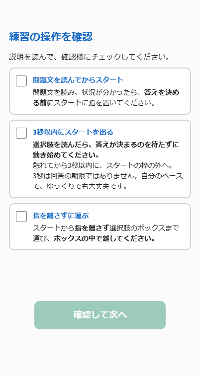

01優先度 高
練習5問の途中
確認ポイントは、該当したものを一つずつ。
いまの画面
早いスタート・遅い初動・途中で離す操作のうち、該当したものだけを振り返り後にまとめて表示します。3つ重なると説明が長く、内部スクロールが必要です。
必要な人にだけ出す仕組みは、そのまま使いたい部分です。
まず試したい案
該当ルールを1ページずつ表示。「練習の操作を確認 1/2」と残りが分かるようにし、最後は「練習を続ける」へつなぎます。
表示例3秒以内に、スタートの枠の外へ
スタートに触れたら、3秒以内に枠の外へ動かします。
3秒は、回答を終える制限時間ではありません。
保つこと
発火条件、該当項目だけ出すこと、チェックと再開の記録、練習の判定。チェックだけで理解を証明した扱いにはしません。道徳的判断の答えの正誤を注意する画面にも変えません。
現行の確認画面を操作する ↗3項目が同時に出た場合の例。通常は該当した項目だけです。
現行の画像を見る
